전자기기기능장 (2013-04-14 기출문제)
1과목: 임의구분
1. PM 방식의 원리 설명으로 FM 변조기 앞에 어떤 회로를 삽입하면 PM파를 얻을 수 있는가?
- 적분회로
- 미분회로
- 위상 변조기
- 평형 변조기
(정답률: 85%)

2. 폐회로 자동제어의 순서를 옳게 나열한 것은?
- 목표값 → 계측 → 조작량 → 판단
- 목표값 → 계측 → 판단 → 조작량
- 제어량 → 목표값 → 조작량 → 동작신호
- 제어량 → 목표값 → 동작신호 → 조작량
(정답률: 56%)
3. 그림 (a)의 회로를 그림 (b)와 같은 등가 회로로 바꿀 때 ET[V]와 RT[Ω]의 값은?
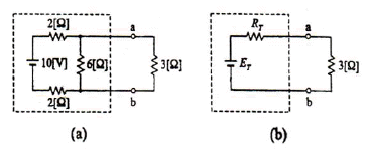
- ET = 6, RT = 2.4
- ET = 4, RT = 10
- ET = 2, RT = 6
- ET = 6, RT = 4
(정답률: 74%)
4. 2차계의 과도응답에서 임계제동의 경우는?
- ζ<1
- ζ>1
- ζ=1
- ζ=0
(정답률: 81%)
5. 어떤 회로에 전압
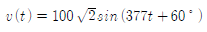
[V] 를 가해 전류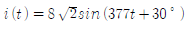
[A]가 흐를 때 평균전력은 몇 [W]인가?- 400√3[W]
- 200√2[W]
- 300[W]
- 200√3[W]
(정답률: 62%)
6. 데이터를 전송하기 위한 동작순서로써 옳은 것은? (문제 오류로 실제 시험에서는 모두 정답처리 되었습니다. 여기서는 1번을 누르면 정답 처리 됩니다.)
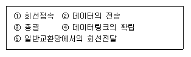
- ①-②-③-④-⑤
- ①-④-②-⑤-③
- ①-②-④-⑤-③
- ①-④-②-③-⑤
(정답률: 62%)
7. 국부 발진주파수가 1000[kHz]일 때, 950[kHz]의 고주파를 수신하여 헤테로다인 검파하면 출력 주파수는 몇 [kHz]인가?
- 25[kHz]
- 50[kHz]
- 75[kHz]
- 100[kHz]
(정답률: 84%)
8. 3-cycle 인스트럭션에 속하지 않는 것은?
- ADD
- LOAD
- STORE
- JUMP
(정답률: 86%)
9. 다음과 같은 진리표를 만족시키는 논리식은?
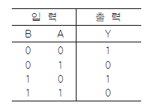
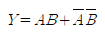
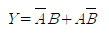
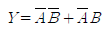
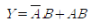
(정답률: 69%)
10. 다음 블록도는 아날로그 신호를 디지털화하여 전송하기 위한 PCM 송신 블록도이다. □안에 알맞은 회로 기능을 순서대로 나열한 것은?
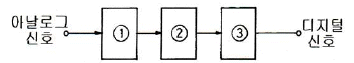
- ① 파형정형 ② 양자화 ③ 표본화
- ① 표본화 ② 양자화 ③ 부호화
- ① 표본화 ② 양자화 ③ 파형정형
- ① 파형정형 ② 표본화 ③ 복호화
(정답률: 92%)
11. 콘형 다이나믹 스피커의 특징과 거리가 먼 것은?
- 진동판은 곡선형, 원추형, 포물선형이 있다.
- 콘지의 지료 및 만드는 방법에 따라 음질에 미묘한 영향을 끼친다.
- 콘지는 구경이 작을수록 저음 특성이 좋아진다.
- 콘지는 주파수가 높아지면 콘지 자체가 동일하게 움직이지 않고, 부분적으로 움직여서 특성이 악화된다.
(정답률: 90%)
12. 마이크로폰에 들어오는 음압이 각 주파수에 걸쳐서 일정한 크기일 때, 각 주파수에 대응한 출력 전압의 관계를 무엇이라 하는가?
- 감도
- 선택도
- 주파수특성
- 지향성
(정답률: 90%)
13. 이미터 접지 증폭기에 대한 설명으로 옳지 않은 것은?
- 저주파 증폭에 많이 이용된다.
- 베이스 접지 증폭기보다 입력저항은 훨씬 크다.
- 전류증폭도와 전압증폭도가 모두 1 이상이다.
- 입력과 출력은 동위상이다.
(정답률: 82%)
14. 다음 priority interrupt에 대한 설명 중 옳지 않은 것은?
- polling 방식에는 priority가 없다.
- 병렬 priority interrupt 방식에는 interrupt register의 Bit 위치에 따라 priority가 결정된다.
- DAISY CHAIN 방식에서는 회로 결선 상태에 의해 priority가 결정된다.
- polling 방식의 결점은 interrupt가 많을 때 시간이 많이 소요된다.
(정답률: 87%)
15. 컴퓨터와 계측기 사이의 데이터 전송용 표준 인터페이스 규약은?
- RS-422
- RS-232C
- IEEE-488
- CENTRONICS
(정답률: 88%)
16. CAD 작업시 회로도(Capture)의 설계 순서가 옳은 것은?
- 도면의 디자인(Schematic Design) → 부품의 참조 값 정의(Annotate) → 설계규칙 검사(Design Rules Check) → 속성의 갱신(Update Properties) → 설계도면의 저장(Save Design) → 네트리스트의 생성(Create Netlist)
- 도면의 디자인(Schematic Design) → 설계규칙 검사(Design Rules Check) → 부품의 참조 값 정의(Annotate) → 설계도면의 저장(Save Design) → 속성의 갱신(Update Properties) → 네트리스트의 생성(Create Netlist)
- 도면의 디자인(Schematic Design) → 부품의 참조 값 정의(Annotate) → 속성의 갱신(Update Properties) → 설계규칙 검사(Design RulesCheck) → 설계도면의 저장(Save Design) → 네트리스트의 생성(Create Netlist)
- 도면의 디자인(Schematic Design) → 속성의 갱신(Update Properties) → 설계규칙 검사 Design Rules Check) → 설계도면의 저장(Save Design) → 부품의 참조 값 정의(Annotate) → 네트리스트의 생성(CreateNetlist)
(정답률: 80%)
17. 0.1[H]의 코일과 20[Ω]의 저항의 적분회로에서 전압이 12[V]인 전지를 인가시 전류가 최종 값의 63[%]에 달할 때 시간은 몇 [ms]인가?
- 1[ms]
- 5[ms]
- 10[ms]
- 15[ms]
(정답률: 64%)
18. 마이크로폰의 종류 중 양지향성을 갖는 것은?
- MC형 마이크로폰
- 리본형 마이크로폰
- 크리스털형 마이크로폰
- 가동코일형 마이크로폰
(정답률: 93%)
19. 정전압 회로에서 무부하일 때의 출력전압을 VNL전부하일 때의 출력전압을 VFL 이라고 하면 부하 전압변동률은?
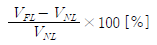
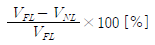
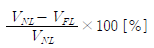
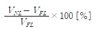
(정답률: 71%)
20. 입력 잡음의 영향을 줄이기 위하여 비교기에 히스테리시스 기능을 추가한 것은?
- 특수 OTA
- 가산 증폭기
- 격리 증폭기
- 시미트 트리거
(정답률: 86%)
2과목: 임의구분
21. 최대 컬렉터 손실에 대한 설명 중 옳은 것은?
- 열 저항에 비례한다.
- 주위온도에 비례한다.
- 주위온도에 반비례한다.
- 주위온도와 관계없다.
(정답률: 68%)
22. 다음 명령 중 번지 필드가 필요 없는 명령은?
- 데이터 전송 명령
- 산술 명령
- 스킵(skip) 명령
- 서브루틴 call 명령
(정답률: 83%)
23. SRAM에 대한 설명으로 옳은 것은?
- Access 속도가 DRAM보다 빠르다.
- 전력소비가 DRAM에 비해 적다.
- 주기적으로 재충전이 필요하다.
- 가격이 DRAM에 비해 싸다.
(정답률: 77%)
24. 계기착륙방식(ILS) 중 수평 위치의 정확한 코스를 알려주는 로컬라이저 비컨국의 변조 주파수는?
- 100[Hz], 150[hz]
- 90[Hz], 150[Hz]
- 90[Hz], 120[Hz]
- 150[Hz], 300[Hz]
(정답률: 79%)
25. 다음 논리회로와 등가인 논리회로는?
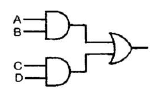
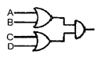
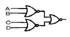
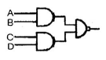
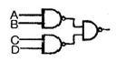
(정답률: 79%)
26. 콘덴서의 전위차와 축적된 에너지와의 관계식을 도형으로 나타내면?
- 직선
- 타원
- 포물선
- 원
(정답률: 92%)
27. JK 플립플롭에서 J=1, K=1일 때 클록 펄스가 들어가면 출력 Q는?
- 0
- 1
- Q
- Q'
(정답률: 93%)
28. 동기식 계수기의 특징으로 옳지 않은 것은?
- 동작속도가 고속이다.
- 설계가 어렵고 불규칙적이다.
- 클록발진기가 별도로 필요하다.
- 회로가 복잡하고 주로 큰 시스템에 사용된다.
(정답률: 90%)
29. 영상처리시스템의 입력장치에 해당하지 않는 것은?
- 스캐너
- 디지털 카메라
- 비디오카메라
- 소프트 카피
(정답률: 90%)
30. 다음 중 전달함수를 정의할 때 가장 옳게 나타낸 것은?
- 입력만을 고려한다.
- 모든 초기 값을 고려한다.
- 주파수 특성만을 고려한다.
- 모든 초기 값을 0으로 한다.
(정답률: 87%)
31. LC 발진기에 해당되지 않는 것은?
- 클랩 발진기
- 이상 발진기
- 콜피츠 발진기
- 하트레이 발진기
(정답률: 71%)
32. CPU의 산술논리연산장치는?
- PC
- ACC
- ALU
- SP
(정답률: 90%)
33. 어떤 회사는 8개의 장치가 완전히 연결된 Mesh network를 가지고 있다. 필요한 케이블 수는 몇 개인가?
- 4
- 7
- 28
- 56
(정답률: 86%)
34. 다음 오류제어방식 중 재전송 요청을 하지 않고 수신측에서 검출도니 오류를 수신측에서 정정하는 자기정정방식은?
- 수평 패리티 방식
- 군계수 검사방식
- 중복순환검사 방식
- 해밍부호 방식
(정답률: 89%)
35. 그림의 회로에서 5[Ω]의 저항에 흐르는 전류는 몇 [A]인가?
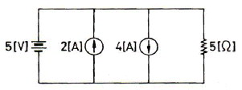
- 1[A]
- 2[A]
- 3[A]
- 4[A]
(정답률: 90%)
36. 마이크로컴퓨터가 수행할 수 있는 기능이 아닌 것은?
- 사고기능
- 연산기능
- 제어기능
- 기억기능
(정답률: 91%)
37. 2헤드 VCR과 4헤드 VCR의 설명으로 옳지 않은 것은? (단, VCR은 동일 기종으로 간주함)
- 영상신호의 기록방식은 헤드 수와 무관하게 동일하다.
- 표준(Standard Play) 모드에서 영상신호의 재생방식은 서로 동일하다.
- 표준(Standard Play) 모드에서 4헤드 방식이 2헤드 방식보다 재생 화질이 더 좋다.
- 일시정지(Still) 모드에서 4헤드 방식이 2헤드 방식보다 영상처리 과정이 복잡하다.
(정답률: 66%)
38. 다음 중 번지(address)를 지정해서 그 내용을 자유롭게 읽어 낼 수 있고, 써넣을 수도 있는 메모리는?
- ROM
- RAM
- PROM
- CORE
(정답률: 90%)
39.
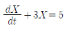
의 라플라스 변환을 하면? (단, X(0+)=0이다.)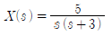
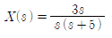
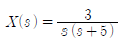
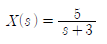
(정답률: 76%)
40. 여러 개의 입ㆍ출력장치를 제어할 수 있는 채널은?
- I/O channel
- duplex channel
- multiplexer channel
- register channel
(정답률: 86%)
3과목: 임의구분
41. 유전가열에 대한 설명 중 옳지 않은 것은?
- 전원을 끊어도 가열은 계속된다.
- 내부가열이므로 표면의 손상이 없다.
- 주파수가 높을수록 전력소비도 증가한다.
- 유전손에 의한 전력소비는 정전용량에 비례한다.
(정답률: 80%)
42. JK 플립플롭을 이용하여 J와 K입력 사이를 NOT 게이트로 연결한 플립플롭은?
- RST형 플립플롭
- RS형 플립플롭
- D형 플립플롭
- T형 플립플롭
(정답률: 59%)
43. 2진수 11110010을 16진수로 표현하면?
- F2
- 152
- 362
- 6A
(정답률: 81%)
44. 초음파의 에너지를 크게 했을 때 일어나는 현상이 아닌 것은?
- 공동현상
- 산화작용
- 발광작용
- 입자의 집합작용
(정답률: 73%)
45. 고주파 유전 가열에 대한 설명으로 옳지 않은 것은?
- 전원을 끊으면 가열은 즉시 정지하여 열의 이용이 쉽다.
- 고주파 용접, 음식물의 조리 등에 응용된다.
- 금속의 표면 가열이 쉽게 이루어진다.
- 전원주파수가 높을수록 분자의 방향 전환속도가 빠르게 되어 전력소비도 증가한다.
(정답률: 86%)
46. 콘덴서 두 극판 사이의 간격이 d[m]이고, 전압이 V[V]이다. 이 극판 사이에 전하 Q[C]의 입자 받는 힘은?
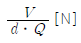
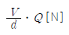
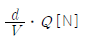
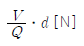
(정답률: 77%)
47. 같은 보빈 위에 동일한 권수로 인덕턴스 L[H]의 코일 2개를 접근해서 감고 이것을 직렬로 접속했을 때 합성 인덕턴스는? (단, 결합계수는 0.8이다.)
- 0.2L[H]
- 0.4L[H]
- 3.6L[H]
- 3.8L[H]
(정답률: 82%)
48. 합성 동기신호에서 수평 동기신호를 분리하는데 사용하는 회로는?
- 미분회로
- 적분회로
- 디앰퍼시스회로
- 프리앰퍼시스회로
(정답률: 71%)
49. 다음 중 녹음 또는 재생이라는 기계적인 방법을 거친 경우에 나타나는 현상으로 재생음이 떨리 나 탁해지는 원인이 되는 것은?
- S/N비
- 고조파 왜곡
- 에코(잔향)
- 와우플러터(wow and flutter)
(정답률: 82%)
50. V1(s)를 입력, V2(s)를 출력이라 할 때, 다음 회로의 전달함수는? (단, C1=1[F], L1=1[H]이다.)
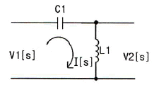
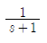
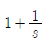
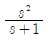
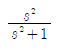
(정답률: 70%)
51. 레이저(laser)에 관한 설명 중 가장 옳지 않은 것은?
- 주파수 폭이 매우 좁은 단색광이다.
- 사인파의 일종으로 파장이 매우 짧다.
- 전자파의 유도 방출로 빛을 발생한다.
- 레이저의 종류에는 고체와 액체 레이저만 있다.
(정답률: 94%)
52. 음(소리)의 3요소 가운데 그 중 하나를 설명한 것은?
- 소리의 반사에 의한 간접 음이 잔향이다.
- 높은 주파수의 소리일수록 흡수되는 성질이 강하다.
- 낮은 주파수의 소리일수록 반사하는 성질이 강하다.
- 소리의 높이는 기본 주파수 또는 파장에 의하여 정해진다.
(정답률: 84%)
53. 펄스진폭변조(PAM)와 펄스위상변조(PPM)를 비교하여 설명한 것 중 옳지 않은 것은?
- 신호대잡음비(S/N)는 PAM쪽이 뒤떨어진다.
- 채널수가 같은 경우 PAM쪽이 펄스폭을 더욱 크게 할 수 있다.
- 두 변조방식 모두 다중통신에 적합하다.
- PPM이 채널수를 더 많이 할 수 있다.
(정답률: 50%)
54. 프로토콜의 기능에 관한 설명 중 옳지 않은 것은?
- 엔티티간 긴 메시지를 전송할 때는 보통 전송이 용이하도록 세분화하여 전송하는 과정을 캡슐화(encapsulation)라고 한다.
- PDU들을 원래의 순서대로 복원하여 재조립하기 위해 PDU에 일련번호를 지정하며 수신측에서는 이 일련번호를 이용하여 순서를 재조정하는 것을 순서 결정(sequence)이라고 한다.
- 수신 개체는 송신 개체에서 보내는 데이터 전송량이나 전송속도 등을 조절하는데 이를 흐름 제어(flow control)라고 한다.
- 송신측 엔티티와 수신측 엔티티 간에 타이밍을 맞추는 기능, 즉 2개의 엔티티가 같은 상태를 유지하는 것을 동기화(synchronization)라고 한다.
(정답률: 82%)
55. 검사의 분류 방법 중 검사가 행해지는 공정에 의한 분류에 속하는 것은?
- 관리 샘플링검사
- 로트별 샘플링검사
- 전수검사
- 출하검사
(정답률: 74%)
56. 다음 중 브레인스토밍(Brainstorming)과 가장 관계가 깊은 것은?
- 파레토도
- 히스토그램
- 회귀분석
- 특성요인도
(정답률: 76%)
57. 단계여유(slack)의 표시로 옳은 것은? (단, TE는 가장 이른 예정일, TL은 가장 늦은 예정일, TF는 총 여유시간, FF는 자유여유시간 이다.)
- TE - TL
- TL - TE
- FF - TF
- TE - TF
(정답률: 79%)
58. c 관리도에서 k=20인 군의 총 부적합수 합계는 58이었다. 이 관리도의 UCL, LCL을 계산하면 얼마인가?
- UCL = 2.90, LCL = 고려하지 않음
- UCL = 5.90, LCL = 고려하지 않음
- UCL = 6.92, LCL = 고려하지 않음
- UCL = 8.01, LCL = 고려하지 않음
(정답률: 61%)
59. 테일러(F.W. Taylor)에 의해 처음 도입된 방법으로 작업시간을 직접 관측하여 표준시간을 설정하는 표준시간 설정기법은?
- PTS법
- 적자료법
- 표준자료법
- 스톱워치법
(정답률: 63%)
60. 공정 중에 발생하는 모든 작업, 검사, 운반, 저장, 정체 등이 도식화 된 것이며 또한 분석에 필요하다고 생각되는 소요시간, 운반거리 등의 정보가 기재된 것은?
- 작업분석(Operation Analysis)
- 다중활동분석표(Multiple Activity Chart)
- 사무공정분석(Form Process Chart)
- 유통공정도(Flow Process Chart)
(정답률: 74%)
따라서, FM 변조기 앞에 미분회로를 삽입하면 변조 신호의 위상 변화량을 미분하여 변조된 신호의 진폭을 변화시키는 효과를 얻을 수 있습니다. 이는 PM파를 생성하는 원리와 일치하므로, 미분회로를 삽입하면 PM파를 얻을 수 있습니다. 적분회로를 삽입하면 위상 변화량이 적분되어 변조된 신호의 진폭이 변화하지 않으므로 PM파를 얻을 수 없습니다. 위상 변조기와 평형 변조기는 PM 방식과는 다른 방식의 변조를 수행하므로, PM파를 얻을 수 없습니다.